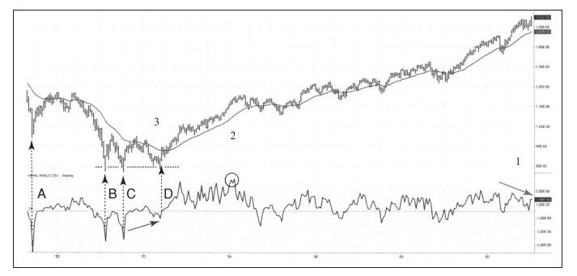

通常，我们从亏钱中学到的比从赚钱中学到的要多，2007~2009年的熊市是位严苛的老师，给多数交易者造成了极大的伤害。现在是时候作总结了，我修正本书的目的是帮你在未来做出更好的交易计划以使你未来的交易之路更加平坦。
始于2003年的牛市走到2007年中期的时候已是步履蹒跚，能持续4年半时间的牛市确实很罕见，所以，2007年牛市结束的警钟声越来越响。
我认为NH-NL指标是股票市场上最好的领先指标，新高表示股价创出过去一年的最高价，表明市场处于强势状态，新低的意义与新高相反。
如果把交易所上市的所有股票比作士兵，新高和新低就是军官。打仗时军官的表现决定战斗的成败，军官是一马当先还是踌躇不前、领导有方还是领导无方。多年前我参加军官培训的时候，培训师告诉我们没有糟糕的士兵，只有糟糕的军官。我赞同这种说法，所以我总是留意NH-NL指标的动向。
日线NH-NL指标的计算方法是用今日创新高的股票数减去今日创新低的股票数，周线NH-NL指标的计算方法是过去5个交易日创出新高的股票数减去创出新低的股票数之差。
从图9-1右侧的区域1可以看到标普500指数创出新高时，周线的NH-NL指标并没有出现新高，说明士兵还在进攻，军官却已经逃跑。领导无方的军队更容易失败，当时我刚开始写本书的第1章。

从区域2中我们可以看到周线NH-NL指标达到了自2004年以来的最高，牛市早期新高新低达到最高峰是正常的。将这种情况与人成长周期相比较我们会发现，在生命的早期，我们成长最快，之后这个指标开始下降甚至反转。牛市早期出现新高新低指标峰值是正常的，但在2007年的上涨中，新高新低峰值出现后牛市持续的时间太长了，这非常不正常。
最后我们从区域3可以看到NH-NL指标是如何指示中级和最重要的熊市底部的。为了在将来更好地使用这个指标，我们再复习一遍上述内容。
·NH-NL指标出现下跌尖角并跌到负4 000的水平表明大量痛苦的交易者落荒而逃，创造出极好的买入机会。无论月线走势如何，也无论是否在熊市，当周线NH-NL指标跌到负4 000以下的水平时，至少会有几周的强烈上涨。图9-1中用虚箭头标注了三个这样的尖角下跌[1]，下一节我们会看到2007~2009年熊市时这种尖角下跌是如何出现的。
·NH-NL指标周线底背离为标普500指数提供了异常强烈的买入信号。市场下跌、反弹，然后跌到或跌破前低；与此同时，NH-NL指标也尖角下跌，然后反弹到零线之上，之后再度尖角下跌，但深度已经很浅了。这种市场行为模式表示，当士兵在撤退时，军官在重新组织士兵以不再撤退，战斗也即将开始。
回过头来再看图表右侧，可以看到NH-NL指标出现顶背离（用1下的箭头标注）。这表明牛市远不如当初那么强烈，市场行为和我的信念让我觉得是该写本有关卖空的图书了。
[1]Spike集团就是在出现这样的尖角下跌后以此命名的。